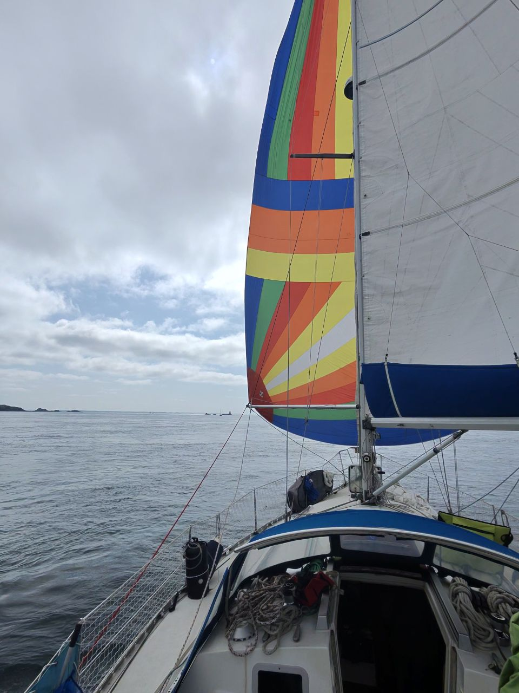

Mars → Septembre 2027
Sept mois. Quatre personnes. Un First 375 de 1988. On est des enfants des années 90, et on part à l'aventure avec nos propres enfants — à la voile, jusqu'aux Shetland et retour, sur un bateau qu'on a refait de nos mains.
Beaucoup rêvent de ce genre de projet. Peu s'y lancent vraiment. Et encore moins se donnent les moyens de le faire — l'investissement financier, l'investissement personnel, et des centaines d'heures passées à préparer le bateau plutôt qu'à en rêver.
On l'a fait. Ou plutôt : on est en train de le faire.
milles nautiques déjà parcourus avec Azurite depuis février 2025, dont un aller-retour jusqu'à Guernesey cet été — notre entraînement avant l'Écosse.
Navigation suivie sur PolarStep, participation à un programme de sciences participatives avec Astrolabe Expeditions, et des lives présentés par nos enfants pour les deux écoles de notre village.
« Allez-y, il faut le faire, c'est magnifique. »
— Philippe Poupon, croisé cet été à l'Aber Wrac'h
Il nous reste à finaliser notre équipement avant le départ. Si vous représentez une marque, un commerce local ou une association, notre page Sponsors explique concrètement ce qu'on propose en échange.
Devenir sponsor